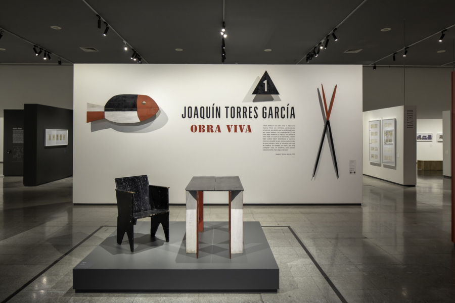
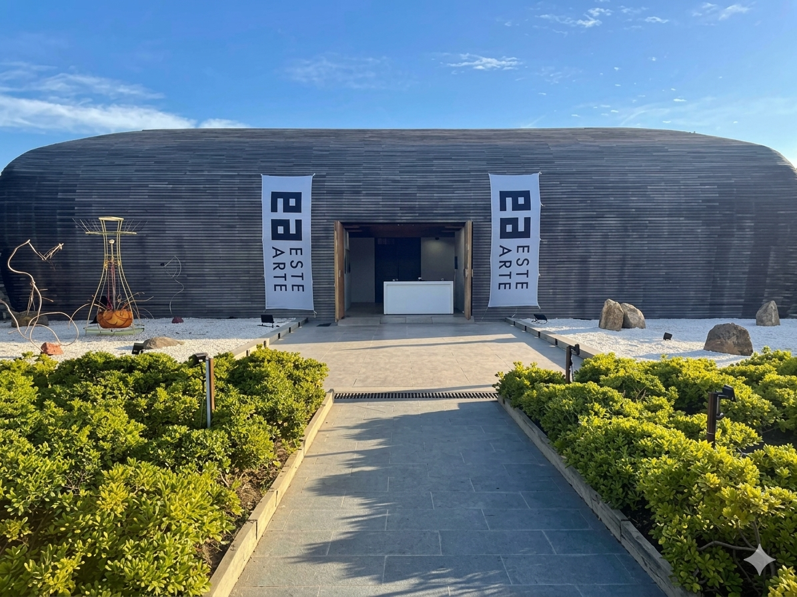

Amanecer en la laguna
Dimensiones: 80 x 60 cm.
Técnica de pincel seco para texturas suaves que evocan la atmósfera del amanecer.
Artista plástica uruguaya capaz de plasmar sobre el lienzo la belleza de la naturaleza ayudándose de diferentes técnicas como pincel seco, stippling y scumbling.
Contactar por WhatsApp
Obras recientes de Evelyn.
Dimensiones: 80 x 60 cm.
Técnica de pincel seco para texturas suaves que evocan la atmósfera del amanecer.

Dimensiones: 70 x 50 cm.
Técnica: Pincel seco y scumbling para reflejar la fuerza de la naturaleza y la luz sobre los árboles..

Dimensiones: 90 x 70 cm.
Técnica: Pincel seco y Stippling para el punteado que crea profundidad y movimiento entre hojas y sombras.

Nacida el en Montevideo, Uruguay.
Evelyn es una Artista plástica autodidacta desde 2010, su gran pasión por el arte la acompaña hace más de 16 años lo que le otorga una gran experiencia. A lo largo de los años ha explorado no solo técnicas sino la capacidad de transmitir emociones a través de sus obras.
Inspira su obra: La naturaleza, especialmente paisajes
Influencias: Monet y Van Gogh.


Primera muestra en el Museo de Artes Visuales de Montevideo.
Gira de talleres en Durazno y reconocimiento nacional por aporte cultural.
Exposición en Argentina.
Expuso en el MACA.
Trabajos por encargo, 100% personalizados.
Elegís:
Algo especial para regalar o regalarse.

Clases para todas las edades y niveles, con un método cercano y creativo.

Servicio como presentadora y guía en ferias y galerías en todo el país.
Experiencia en:

Sesiones prácticas para personas que recién empiezan.
Técnicas:
Lugar de dictado: Museo Joaquín Torres García
Fecha: 15/08/2026

Exposición de varias de mis obras como invitada especial.
Lugar de dictado: Punta del Este, Maldonado.
Fecha: 10/12/2026

Podes contactarme a través de WhatsApp, Instagram o email y arreglamos los detalles (tamaño, técnica, tiempos de entrega, etc).
El tiempo dependerá del tamaño y la complejidad de la obra. Tiempo estimado entre 1 y 3 semanas.
Trabajo principalmente con pintura acrílica sobre lienzo, utilizando técnicas como pincel seco, stippling (punteado) y scumbling para lograr diferentes efectos.
Sí, las clases están pensadas para todas las edades y niveles, desde principiantes hasta personas con experiencia previa.
Los talleres se realizan en distintos puntos de Uruguay. Las fechas y ubicaciones se publican en la sección de eventos.
Sí, realizo envíos a todo el país. Los costos y tiempos de envío se coordinan al momento de la compra.
Contame tu idea y te respondo por correo. Tambien podes escribirme por WhatsApp o seguir mi trabajo en Instagram.